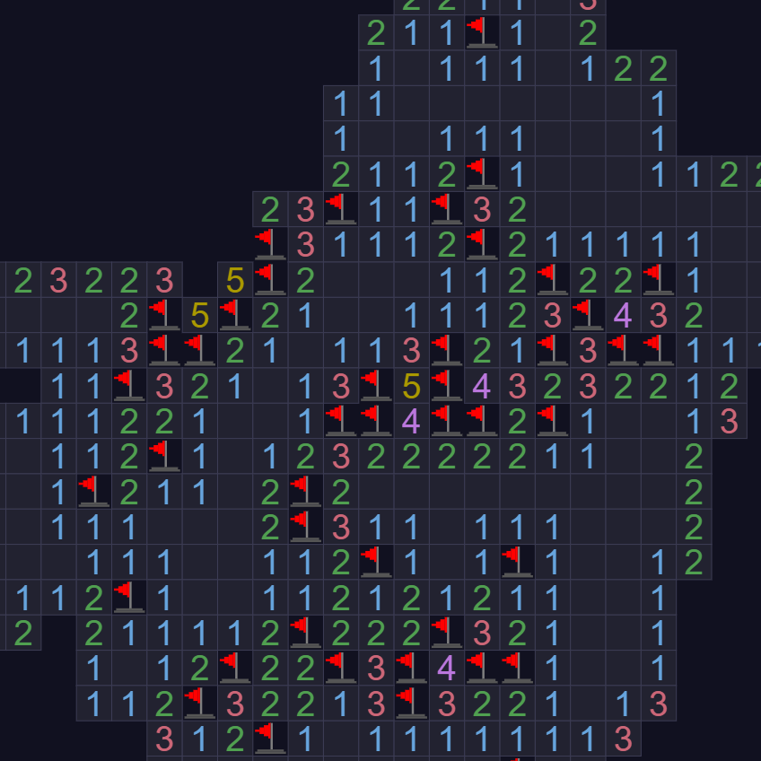
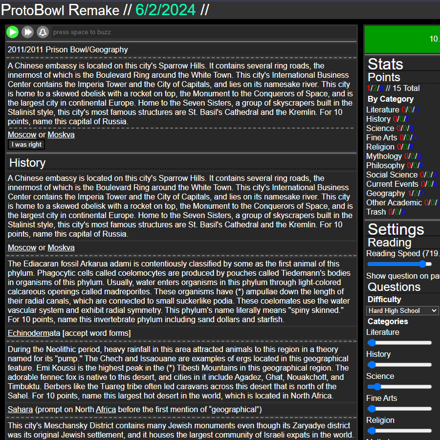

Links
Here are my other social links!
| Home | Blog | Projects |
| Infinisweeper  Infinisweeper is a clone of the site 1000 Mines. It's an infinite version of minesweeper, and you can adjust the difficulty. Be careful, as if you mess up once you have to start all over! |
Protobowl Remake  Protobowl Remake is a clone of Protobowl. It's almost the same thing, but I added some QoL features that aren't in the original. |
ELEM5 Elem5 is a remake of Elemental 3, which is now defunct. It's a simple, light, local version where there's not much to discover but you can have some fun making your own elements. |